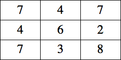
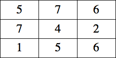
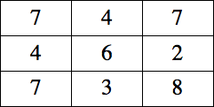
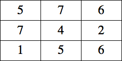

1-2. C-Notes Add digits before or after some of the digits in the grid so that in the resulting grid, each row and column adds to 100. 1.  2.  Click here for the answers.
Add digits before or after some of the digits in the grid so that in the resulting grid, each row and column adds to 100.
1. 
2. 